초음파비파괴검사기사(구) (2005-03-20 기출문제)
1과목: 초음파탐상시험원리
1. 초음파탐상시험법에 관한 특성 설명으로 틀린 것은?
- 진동자의 두께가 얇을수록 주파수가 높아진다.
- 주파수가 높을수록 투과 능력이 좋아진다.
- 진동자의 면적이 클수록 근거리음장한계거리는 커진다.
- 진동자의 면적이 클수록 지향각은 작아진다.
(정답률: 알수없음)

2. 국제표준화규격(ISO)에서 분류하고 있는 비파괴시험의 전문위원회에 관한 규격에 해당하는 것은?
- ISO TC 44
- ISO TC 135
- ISO TC 107
- ISO TC 17
(정답률: 알수없음)
3. 초음파탐상시험을 할 때 결함에서 반사된 에너지의 양은 다음 어느 것에 의존하는가?
- 결함의 크기, 방향에만 의존한다.
- 결함의 방향, 종류에만 의존한다.
- 결함의 크기, 종류에만 의존한다.
- 결함의 크기, 방향, 종류에 의존한다.
(정답률: 알수없음)
4. 탄소강(음향 임피던스 Z1)에 스테인리스강(음향임피던스 Z2)이 클래딩되어 있다. 탄소강 측에서 2㎒로 수직탐상하였을 때 경계면에서의 음압 반사율은?
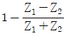
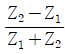
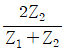
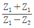
(정답률: 알수없음)
5. 진동자로 사용키 위해 수정을 Y-cut 했을 경우 파형은?
- 종파
- 횡파
- 판파
- 종파 및 횡파
(정답률: 알수없음)
6. A.V.G 선도에서 NB=2, 피검체 두께 T=30㎜일 때 근거리 음장은 얼마인가? (단, NB=저면까지 규준화거리)
- 15㎜
- 30㎜
- 32㎜
- 40㎜
(정답률: 알수없음)
7. 다음 중 파괴관리에 도움을 주기 위한 비파괴시험의 역할은?
- 인장강도의 정확한 측정
- 불연속의 수와 종류의 정확한 평가
- 일정결함이 임계크기로 성장하는데 걸리는 시간의 예측
- 충격강도와 크리프강도의 정확한 측정
(정답률: 알수없음)
8. 다음 중 비철 재료의 용접부위에 들어 있는 개재물의 형상을 검출하는데 가장 적절한 비파괴검사법은?
- 방사선투과시험
- 자분탐상시험
- 침투탐상시험
- 음향방출시험
(정답률: 알수없음)
9. 초음파탐상시험에서 접촉매질의 사용 목적이 아닌 것은?
- 탐촉자와 시험체 사이의 공기 제거
- 탐촉자와 시험체의 음향임피던스 조화
- 음향 전달 효율 향상
- 시험속도 증가
(정답률: 알수없음)
10. 표면이 거칠은 부품을 초음파탐상시험할 경우 일반적으로 만족할만한 시험효과를 얻기 위하여, 표면이 매끈한 부품에 사용할 경우와 비교한 설명 중 맞는 것은?
- 표면이 매끈한 부품에 사용할 경우보다 더 낮은 주파수의 탐촉자와 점성이 높은 접촉 매질을 사용한다.
- 표면이 매끈한 부품에 사용할 경우보다 더 높은 주파수의 탐촉자와 점성이 높은 접촉 매질을 사용한다.
- 표면이 매끈한 부품에 사용할 경우보다 더 높은 주파수의 탐촉자와 점성이 적은 접촉 매질을 사용한다.
- 표면이 매끈한 부품에 사용할 경우보다 더 낮은 주파수의 탐촉자와 점성이 적은 접촉 매질을 사용한다.
(정답률: 알수없음)
11. 초음파의 지향성에 관한 설명중 틀린 것은?
- 원형진동자의 지향성은 빔축에 대해 대칭이 된다.
- 만일 같은 진동자에서 종파와 횡파가 같이 발생할 때는 횡파의 지향성이 예리하다.
- 지향성은 파장과 펄스폭으로서 변화된다.
- 지름이 큰 진동자라 하여도 일부분에서만 진동할 때는 지향성은 둔하다.
(정답률: 알수없음)
12. 탐촉자의 빔 분산은 다음 중 무엇에 주로 좌우되는가?
- 탐상 방법
- 탐촉자에서 수정의 밀착성
- 펄스의 길이
- 주파수 및 진동자의 크기
(정답률: 알수없음)
13. 진동자와 주파수의 관계에 대한 설명이다. 옳은 것은?
- 진동자는 사용주파수의 한 파장의 길이를 그 두께로 한다.
- 주파수의 변화에는 관계없이 진동자의 두께는 일정하다.
- 주파수가 높아질수록 진동자의 두께는 얇아진다.
- 주파수가 높아질수록 진동자의 두께는 두꺼워진다.
(정답률: 알수없음)
14. 다음 중 일반적으로 알루미늄 제품의 미세한 표면결함을 다량으로 검사하는데 효율적인 비파괴검사법은?
- 습식 자분탐상검사
- 수세성 형광침투탐상검사
- 용제제거성 염색침투탐상검사
- 수세성 염색침투탐상검사
(정답률: 알수없음)
15. 초음파의 투과와 반사를 결정할 때 음향 임피던스가 중요한 인자이다. 다음 중 음향임피던스가 가장 큰 재료는?
- 물
- 유리
- 공기
- 철
(정답률: 알수없음)
16. 다음 중 원거리음장에서 빔의 분산각을 나타내는 식은? (단, ø : 빔분산각, λ : 파장, f : 주파수, V : 속도, d : 진동자직경)

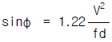
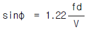

(정답률: 알수없음)
17. 두께 25mm인 철판을 굴절각이 70°인 탐촉자로 탐상한 결과 결함에 대한 빔행정(Beam path distance)이 58.5mm였다면 이 결함의 깊이는?
- 8.5mm
- 14.9mm
- 20.0mm
- 24.9mm
(정답률: 알수없음)
18. 초음파탐상시험에서 수직탐상시 시험편방식에 의한 감도 조정에 관한 설명으로 맞는 것은?
- 감쇠가 적은 시험체에만 적용할 수 있다.
- 시험체의 탐상면과 저면이 평행하지 않으면 적용할 수 없다.
- 감쇠가 큰 시험체일때 결함을 과소평가할 우려가 있다.
- 시험체의 탐상면의 거칠기에 영향을 받지 않는다.
(정답률: 알수없음)
19. 그림과 같은 횡파 굴절각 45°의 경사각탐촉자에서 아크릴 쐐기의 각도는? (단, 아크릴 수지의 종파속도 CL = 2730 m/s, 강중의 횡파속도 CS = 3230 m/s)
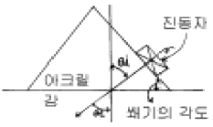
- 약 57.7°
- 약 46.7°
- 약 36.7°
- 약 27.7°
(정답률: 알수없음)
20. 초음파탐상시험시 탐촉자의 주파수가 커지면 어떻게 되는가?
- 빔퍼짐(beam spread)과 투과력이 커진다.
- 빔퍼짐은 작아지고 감도와 분해능은 커진다.
- 빔퍼짐은 작아지고 투과력은 커진다.
- 감도는 적어지고 투과력은 커진다.
(정답률: 알수없음)
2과목: 초음파탐상검사
21. 초음파 탐상기의 탐상도형에 대한 설명 중 틀린 것은?
- 송신펄스 다음에 맨 처음 나타나는 에코는 반드시 저면에코이다.
- 저면과 표면에서 다중반사를 일으키고 에코가 등간격으로 여러 개 나오는 경우가 많다.
- 라미네이션 결함에서는 다중반사를 일으키고 에코가 등간격으로 여러개 나오는 경우가 많다.
- 표면에코와 저면에코와의 사이에 에코가 나타나면 라미네이션이나 비금속개재물 등의 내부결함이 존재한다고 생각해도 좋다.
(정답률: 알수없음)
22. 초음파 탐촉자에서 사용되는 압전재료 중 송신효율이 가장 우수한 것은?
- 지르콘산 납
- 티탄산 바륨
- 황산 리튬
- 니오비움산 납
(정답률: 알수없음)
23. 펄스반사법에 의한 초음파탐상시험에서 수직탐촉자를 사용하였을 때 가장 쉽게 검출할 수 있는 결함은?
- 표면 미세균열
- 핀홀
- 라미네이션
- 용접 기공
(정답률: 알수없음)
24. 판재를 경사각탐상할 때 다음 중 빠뜨리기 쉬운 결함은?
- 음파에 수직인 균열
- 갖가지 방향으로 있는 개재물
- 표면에 평행인 균열
- 작은 결함들이 연속된 것
(정답률: 알수없음)
25. 두께 60mm의 알루미늄 판에 큰 결함이 탐상표면으로부터 30mm 깊이에 탐상표면과 평행하게 결함이 존재할 때 가장 적합한 탐상방법은?
- 수직 탐상법
- 경사각 탐상법
- 표면파 탐상법
- 판파 탐상법
(정답률: 알수없음)
26. 다음 중 초음파탐상시험시 범용 탐촉자로 시험이 어려운 것은?
- 일반 구조용강
- 오스테나이트 스텐레스강
- 용접 구조용강
- 단조강
(정답률: 알수없음)
27. 반사원이 의사지시인지 또는 결함지시인지를 판단하기 위하여 반사원의 위치를 정확히 측정해야 한다. 다음중 결함위치 측정시 오차의 원인이 아닌 것은?
- 결함의 형상에 따른 오차
- 결함에서 파의 감쇠에 의한 오차
- 장치의 조정 및 계측에 의한 오차
- 결함의 경사로 인한 오차
(정답률: 알수없음)
28. 필터 조정기가 부착된 초음파탐상기에서 필터를 사용할 경우 다음 중 올바른 것은?
- 불감대가 커진다.
- 분해능이 증가된다.
- 불감대가 작아진다.
- 분해능이 저하된다.
(정답률: 알수없음)
29. STB-A1의 표준시험편으로 초음파 탐촉자의 굴절각을 측정한 결과 45°였다. 이 탐촉자로 알루미늄에 대한 굴절각을 측정하면 얼마인가?
- 43.5°
- 45°
- 47.5°
- 50°
(정답률: 알수없음)
30. 초음파탐상시험시 탐상면에 접촉매질을 적용하는 가장 큰 이유는?
- 탐촉자의 소모를 방지하기 위하여
- 초음파의 전달효율을 좋게하기 위하여
- 탐촉자의 움직임을 원활히 하기 위해서
- 탐상면의 마모를 방지하기 위해서
(정답률: 알수없음)
31. 초음파 탐상기의 CRT 스크린 상에 나타나는 에코의 높이는 다음 중 무엇에 비례하는가?
- Acoustic pressure
- Acoustic intensity
- Acoustic impedance
- Acoustic amplitude
(정답률: 알수없음)
32. KS B 0896에 의거 판두께 19㎜의 강판 맞대기용접부를 5Z 10x10A70(STB 굴절각 69.5도)을 사용하고 STB-A2에 의해 에코높이 구분선을 작성하였다. 다음의 에코높이 구분선 중에서 가장 적합한 것은?
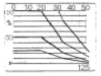
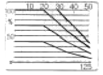
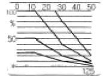
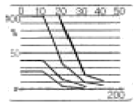
(정답률: 알수없음)
33. 초음파탐상시험시 동일한 크기의 탐촉자에서 주파수를 증가시켰을 때 예상되는 결과는?
- 초음파 빔의 분산이 증가한다.
- 근거리 음장이 증가한다.
- 분해능이 저하된다.
- 파장이 길어진다.
(정답률: 알수없음)
34. 초음파탐상검사시 사용되는 탐촉자의 공진주파수에 대한 설명중 옳은 것은?
- 탐촉자의 공진주파수에서 최대의 진동이 일어난다.
- 공진주파수는 종파속도에 반비례한다.
- 공진주파수는 진동자 두께에 비례한다.
- 공진주파수는 진동자 두께의 2배에 비례한다.
(정답률: 알수없음)
35. 초음파탐상시 결함지시길이 측정을 dB drop법으로 하였을 때의 특징으로 옳은 것은?
- 전이 손실이나 감쇠의 영향을 크게 받지 않는다.
- 작은 결함은 실제보다 작게 나타나는 경향이 있다.
- 에코 높이의 영향을 비교적 많이 받는다.
- 자동화가 용이하다.
(정답률: 알수없음)
36. 판두께가 30mm인 맞대기 용접부를 굴절각 60°의 경사각탐 촉자로 검사할 때 조정해야 할 탐상기의 측정범위는 다음중 어느 것이 가장 적합하겠는가?
- 75mm
- 90mm
- 110mm
- 150mm
(정답률: 알수없음)
37. 초음파탐상시험에서 탐촉자의 주파수를 증가시킬 경우 얻을 수 있는 장점은?
- 지향각이 작아지고 분해능이 증가한다.
- 지향각이 커지고 감도와 분해능이 증가한다.
- 지향각이 작아지고 감도와 분해능이 감소한다.
- 지향각이 커지고 감도는 증가하나 분해능은 감소한다.
(정답률: 알수없음)
38. 초음파탐상시험에 대한 결함깊이, 결함높이의 올바른 설명은?
- 결함깊이는 탐상면으로부터의 결함위치이다.
- 결함깊이는 결함의 판두께 방향의 치수를 말한다.
- 결함높이는 결함의 판두께에 평행한 방향의 치수를 말한다.
- 결함높이는 에코높이 구분선의 영역을 나타낸다.
(정답률: 알수없음)
39. 두께 20mm 강 용접부를 실측굴절각 70°의 탐촉자로 탐상하여 빔의 진행거리가 65mm가 되는 곳에서 결함 에코를 검출했다면 이 결함의 탐상면으로부터의 깊이는?
- 1.6mm
- 2.0mm
- 11mm
- 15mm
(정답률: 알수없음)
40. A스캔 초음파탐상기를 사용하여 결함을 탐상할 경우 아래 보기 중 올바른 순서는?
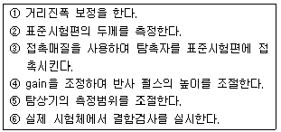
- ① →② →③ →④ →⑤ →⑥
- ③ →② →④ →⑤ →① →⑥
- ③ →② →⑤ →④ →① →⑥
- ③ →④ →① →⑤ →② →⑥
(정답률: 알수없음)
3과목: 초음파탐상관련규격및컴퓨터활용
41. KS D 233에서 자동 경보장치가 없는 탐상장치를 사용하여 탐상하는 경우 탐촉자의 주사속도는 초당 얼마 이상을 초과하지 않아야 하는가?
- 200mm/sec
- 50mm/sec
- 100mm/sec
- 300mm/sec
(정답률: 알수없음)
42. KS B 0896에 따라 강재의 원둘레이음 용접부에 대한 초음파탐상검사시 시험재가 곡률을 가졌을 때 경사각 탐촉자의 접촉면을 시험재의 곡률에 맞추어야 한다. 곡률반지름이 얼마를 초과할 때 탐촉자 접촉면의 곡면 가공을 하지 않아도 되는가?
- 150mm
- 140mm
- 130mm
- 120mm
(정답률: 알수없음)
43. ASTM 규격에서 용접부위 탐상시 경사각탐촉자로 결함검사를 하고자할 때 용접 양쪽부위를 수직탐촉자로 검사한 후에 경사각탐상을 한다. 이 때 수직탐상은 어느 정도 범위로 해야 하는가?
- 용접부위 양쪽 25mm(1인치) 이내
- 용접부위 양쪽 0.5 스킵거리 이내
- 용접부위 양쪽 1 스킵거리 이내
- 경사각탐촉자의 초음파가 통과하는 전 거리
(정답률: 알수없음)
44. ASME Sec.V Art.4에 의한 거리진폭특성곡선(DAC Curve)을 설정하여 실제검사를 하다가 DAC Curve 확인 결과 진폭이 2dB이상 감소되었음을 알았다. 이 경우 취하여야 할 조치로 맞는 것은?
- 그동안의 검사는 유효하나 거리진폭특성곡선은 수정해야 한다.
- 그동안 기록된 검사 데이타는 무효로 하고 완전 재검사해야 한다.
- DAC Curve 및 검사결과가 모두 유효하다.
- 기록된 지시에 대해서만 다시 DAC Curve 설정후 재검사해야 한다.
(정답률: 알수없음)
45. ASME Sev.Ⅰ, Part-PW(용접 보일러)에 따라 두께 2인치 맞대기 용접부를 초음파탐상검사한 결과 다음과 같은 흠이 검출되었다. 다음 중 불합격인 지시는?
- 참조기준(reference level)의 50%에 해당하는 2인치 슬래그
- 참조기준의 80%에 해당하는 1인치 기공
- 참조기준의 110%에 해당하는 0.5인치 슬래그
- 참조기준의 140%에 해당하는 0.3인치 융합불량
(정답률: 알수없음)
46. ASME Sec.V Art.5에서 주조품 검사에 쓰이는 교정시험편을 제작할 때 두께로 알맞은 것은?
- 재료살두께의 ±15%
- 재료살두께의 ±20%
- 재료살두께의 ±25%
- 재료살두께의 ±30%
(정답률: 알수없음)
47. AWS type DC 시험편에 그림에서와 같이 45°탐촉자를 올려 놓았을 때, 반사신호는 순서대로 각각 몇 inch 위치의 빔 노정에서 나오는 것인가? (단, 빔의 왕복거리를 단순히 실제 거리로 나타냄, 빔의 왕복거리 : 4″, 실제거리 2″)
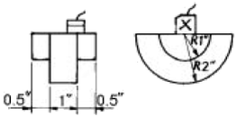
- 1″,2″,3″,4″,...
- 1″,3″,5″,7″,9″,..
- 2″,4″,6″,8″,10″,..
- 2″,6″,10″,14″,...
(정답률: 알수없음)
48. KS D 0250에서 요구하는 수침법에 사용하는 수직 탐촉자의 진동자 공칭 치수는 원칙적으로 지름이 얼마인 것으로 하여야 하는가?
- 5mm이하
- 25mm이하
- 30mm이상
- 40mm이상
(정답률: 알수없음)
49. KS B 0831에 제시된 STB-A1형 표준시험편의 주된 용도는?
- 측정범위의 조정, 입사각 및 굴절각 측정, 경사각탐상의 분해능 측정
- 주파수선정, 감도측정, 굴절각의 정밀도 측정
- 증폭직선성 측정, 펄스반복주파수 측정, 시간축 직선성측정
- 측정범위의 조정, 입사점 및 굴절각 측정, 수직탐상시 분해능 측정
(정답률: 알수없음)
50. KS B 0831에 의한 A1형 STB시험편의 재료 종류 규정은?
- STB 2
- SNCM439
- STB 4
- SWS400
(정답률: 알수없음)
51. ASME Sev.Ⅷ, Div.1 App.12(압력용기 용접부의 초음파탐상검사)에 따라 1인치의 두께를 갖는 맞대기용접부를 검사한 결과 아래와 같은 흠이 검출되었다. 다음 중 합격인 지시는?
- 참조기준(reference level)의 30%에 해당하는 0.5인치 융합불량
- 참조기준(reference level)의 50%에 해당하는 0.5인치 클랙
- 참조기준(reference level)의 80%에 해당하는 0.5인치 슬래그
- 참조기준(reference level)의 110%에 해당하는 0.5인치 기공
(정답률: 알수없음)
52. KS B 0831에서 STB-N1 표준시험편은 다음 중 어떤 경우에 사용하는가?
- 굴절각(경사각탐촉자)을 결정할 때
- 곡률이 있는 시험재의 탐상시 경사각탐촉자의 원점을 수정할 때
- 수직탐촉자의 탐상감도 조정에 사용된다.
- 수직탐촉자의 분해능 측정에 사용된다.
(정답률: 알수없음)
53. AWS D 1.1에 의한 초음파 탐상장비를 재교정해야 할 요건 중 틀린 것은?
- 탐촉자의 교환
- 밧데리의 교환
- 작업자의 교대
- 결함지시의 측정
(정답률: 알수없음)
54. KS B 0896에서 규정한 강용접부 초음파탐상시험에서 5MHz로 80㎛ 이상의 거칠기를 가진 탐상면에 사용하는 접촉매질의 농도는 원칙적으로 몇 % 이상의 글리세린 수용액을 사용하는가?
- 30%
- 75%
- 45%
- 60%
(정답률: 알수없음)
55. KS B 0817에 의거 초음파탐상시험을 실시하고 시험의 결과를 평가하는 경우 고려해야 할 사항으로 적합하지 않은 것은?
- 흠집에코높이
- 흠집에코길이
- 흠집의 지시길이
- 흠집의 지시높이
(정답률: 알수없음)
56. 인터넷 전자우편이나 채팅 그리고 메시지를 뉴스그룹 등에 올릴 때, 글의 내용을 보충하기 위해 키보드 글자나 부호들의 짧은 나열을 이용하여, 보통 얼굴표정을 흉내내거나 느낌을 나타내기 위한 것은 무엇인가?
- emoticon
- icon
- banner
- prompt
(정답률: 알수없음)
57. 인터넷에서 사용하는 문서 중 성격상 서로 다른 것은?
- HTML
- SGML
- TCL
- XML
(정답률: 알수없음)
58. CPU가 입출력 인터페이스의 상태를 일일이 검사하여 직접 입출력을 제어하는 방식은?
- DMA
- programmed I/O
- interrupt driven I/O
- channel controled I/O
(정답률: 알수없음)
59. 인터넷에서 다른 문서와 연결할 수 있도록 작성된 문서를 무엇이라 하는가?
- 멀티미디어
- 하이퍼미디어
- 하이퍼텍스트
- 멀티텍스트
(정답률: 알수없음)
60. 거리에 관계없이 자료발생 즉시 처리하는 양방향 통신 기능을 가진 정보처리 방식은?
- 온라인(On-Line) 처리
- 일괄(Batch) 처리
- 원격 일괄(Remote batch) 처리
- 분산 자료 처리(distributed data processing)
(정답률: 알수없음)
4과목: 금속재료학
61. 티타늄과 티타늄합금의 특성 중 틀린 것은?
- 무게에 비해 높은 강도를 갖는다.
- 높은 내식성을 갖는다.
- 약 550℃ 까지 높은 온도 물성이 좋다.
- O2, N2, H2, C같은 침입형 원소와 반응성, 친화성이 작기 때문에 가공성이 나쁘다.
(정답률: 알수없음)
62. 다음 중 비정질 합금의 제조 방법이 아닌 것은?
- 기체 급냉법
- 액체 급냉법
- 고체 침탄법
- 전기 또는 화학 도금법
(정답률: 알수없음)
63. 냉간가공한 황동을 풀림했을 때의 재결정 입도 미세화에 대한 설명 중 맞는 것은?
- 재결정 입도는 온도가 높고 가공도가 클수록 조대해진다.
- 재결정 입도는 온도가 높고 가공도가 클수록 미세해진다.
- 재결정 입도는 온도가 낮고 가공도가 클수록 조대해진다.
- 재결정 입도는 온도가 낮고 가공도가 클수록 미세해진다.
(정답률: 알수없음)
64. 질화강의 주요 합금원소가 아닌 것은?
- Aℓ
- Cr
- Si
- Mo
(정답률: 알수없음)
65. α-황동을 냉간 가공하여 재결정 온도 이하의 낮은 온도로 풀림을 하면 가공 상태보다 더욱 경도가 증가되는 현상은?
- 시효 경화
- 석출 경화
- 경년 변화
- 저온 풀림 경화
(정답률: 알수없음)
66. 다음 중 알루미늄의 특성이 아닌 것은?
- 상온에서 판, 선재로 압연가공하면 경도와 인장강도가 증가하고 연신율이 감소한다.
- 구리에 비해 산과 알칼리에 대한 부식저항이 더 크다.
- 산화피막이 형성되어 내식성이 강하다.
- 융점이 낮아 용해가 용이하고 용접성이 우수하다.
(정답률: 알수없음)
67. 0.2% 탄소강의 723℃ 선상에서 오스테나이트의 양(%)은?
- 약 23%
- 약 40%
- 약 67%
- 약 80%
(정답률: 알수없음)
68. 다음 중 내마모성을 주목적으로 하는 특수강은?
- Ni-Cr 강
- 고 Mn 강
- Cr 강
- Cr-Mo 강
(정답률: 알수없음)
69. Al합금의 종류 중 Al-Si계 합금에 대한 설명으로 옳지 않은 것은?
- 고용체에 의해 시효경화를 이용하여 경도를 증대한 대표적인 Al합금이다.
- 평형상태에서 Al에 Si가 고용될 수 있는 한계는 공정온도인 577°에서 약 1.65%이다.
- 용융상태에서 유동성이 높으며 응고중의 주입성이 우수하고 열간취성이 비교적 없다.
- AA알루미늄 식별부호 중 4XXX에 해당하며 우수한 주조 특성 때문에 상업적으로 많이 사용되는 합금이다.
(정답률: 알수없음)
70. 합금강 재료의 마텐자이트 변태 개시 온도(Ms)를 낮게 하는 가장 큰 요인은?
- 탄소 함량의 증가
- 코발트 함량의 증가
- 결정입도의 조대화
- 소성가공
(정답률: 알수없음)
71. 탄소강에 나타나는 조직 중 연성이 가장 풍부한 것은?
- 페라이트(Ferrite)
- 마텐자이트(Martensite)
- 투루스타이트(Troostite)
- 베이나이트(Bainite)
(정답률: 알수없음)
72. 강의 Martensite 조직이 경도가 큰 이유가 될 수 없는 것은?
- 탄소에 의한 Fe의 격자강화
- 급냉으로 인한 내부응력 존재
- 확산 변태에 의한 Pearlite의 분리
- 쌍정형성 및 입자 미세화에 의한 전위이동 억제
(정답률: 알수없음)
73. 그림의 상태도는 어떠한 상변태를 하는 합금을 나타낸 것인가?
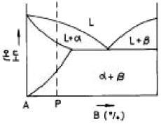
- 동소 변태형 합금
- 공석 변태형 합금
- 석출 경화형 합금
- 전율 고용체형 합금
(정답률: 알수없음)
74. Mg 및 그 합금의 특징에 대한 설명 중 가장 관계가 먼 것은?
- 실용재료로서 가장 가벼운 금속이다.
- 비강도(比强度)가 커서 휴대용 기기나 항공우주용 재료로서 매우 유리하다.
- 주조시의 생산성이 나쁘며, 내식성은 고순도의 경우 나쁘고 저순도의 경우 매우 좋다. 따라서 피막처리가 필요 없다.
- 고온에서는 매우 활성이고, 분말이나 절삭설은 발화의 위험이 있다.
(정답률: 알수없음)
75. 2개의 금속이 광범위한 조성에 걸쳐 치환형 고용체가 형성되기 위한 조건을 바르게 설명한 것은?
- 원자 반경의 차이가 약 45% 이하
- 비슷한 원자밀도
- 비슷한 자유에너지
- 비슷한 원자가
(정답률: 알수없음)
76. 용융금속이 응고된 후 형성된 등축정 조직에 대한 설명이 틀린 것은?
- 주물의 수축공 내면 등에서 잘 발달하며 나무 가지 모양의 결정을 말한다.
- 결정립이 여러 방향을 향하고 있으므로 조직이 균일하다.
- 기계적 성질이 우수하고, 응고할 때 발생하는 결함의 형성을 줄일 수 있다.
- 응고조직은 측면에서 기계적 특성상 등축정 조직 부분 비중이 높은 것이 좋다.
(정답률: 알수없음)
77. 알루미늄합금의 제조시 과열(overheating)을 피해야 하는 이유로 적합하지 않는 것은?
- 과열을 받은 합금은 응고할 때 천천히 냉각됨으로서 최대한 결정립이 생성되기 때문이다.
- 고온에서의 알루미늄은 수증기와 반응하여 산화 알루미늄 (Al2O3)을 생성하기 때문이다.
- 고온에서의 알루미늄은 수증기와 반응하여 수소(H2)를 생성하기 때문이다.
- 과열을 받은 합금은 주조성이 떨어지기 때문이다.
(정답률: 알수없음)
78. 결정 입계의 특성에 대해 바르게 설명한 것은?
- 결정입계 에너지 때문에 결정립이 성장하거나 이동할 수 있다.
- 결정입계의 밀도는 높은 온도에서 더욱 증가하려는 경향이 있다.
- 결정입계는 결정입내보다 치밀한 원자구조를 갖는다.
- 결정입계는 전위의 이동을 방해하지 않는다.
(정답률: 알수없음)
79. 탄소강에서 인(P)의 영향 중 틀린 것은?
- Fe3P를 형성하며 입자의 조대화를 촉진한다.
- 인(P)의 악 영향은 탄소량이 증가하면 감소한다.
- 상온 취성의 원인이 된다.
- Fe3P는 MnS 또는 MnO와 ghost line을 형성한다.
(정답률: 알수없음)
80. 중성자를 잘 통과 시키므로 원자로 연료의 피복제, 중성자의 반사제나 원자핵 분열기에 이용되는 금속은?
- Ge
- Be
- Si
- Te
(정답률: 알수없음)
5과목: 용접일반
81. 다층(multi-layer)용접시 전층의 용접 경화부에 대하여 후속층의 용접열로 조직 개선 효과를 줄 수 있는 것은 다음중 어느 효과에 의하여 가능한가?
- 뜨임(tempering)
- 담금질(quenching)
- 풀림(annealing)
- 불림(normalizing)
(정답률: 알수없음)
82. 일렉트로 슬래그 용접의 장·단점 설명으로 틀린 것은?
- 박판용접에는 적용할 수 없다.
- 최소한의 변형과 최단시간의 용접법이다.
- 용접 진행 중 용접부를 직접 관찰할 수 있다.
- 아크가 눈에 보이지 않고 아크 불꽃이 없다.
(정답률: 알수없음)
83. 가스절단작업에서 다음 가스 중 예열 연소시 산소를 가장 많이 필요로 하는 가스는?
- 프로판
- 부탄
- 에틸렌
- 아세틸렌
(정답률: 알수없음)
84. 아크전압 30V, 아크전류 300A, 무부하전압이 80V인 용접기의 역률(power factor)은 얼마인가?(단, 내부 손실은 4 kW 이다)
- 48%
- 54%
- 68%
- 86%
(정답률: 알수없음)
85. 티그 용접시 모재의 용입이 가장 깊어지는 경우는?
- He가스로 DCRP일 때
- He가스로 DCSP일 때
- Ar가스로 DCRP일 때
- Ar가스로 DCSP일 때
(정답률: 알수없음)
86. 다음 중 용접의 장점이 아닌 것은?
- 재료가 절약되고 중량이 가벼워진다.
- 두께의 제한이 없다.
- 작업의 자동화가 쉽다.
- 잔류응력이 존재한다.
(정답률: 알수없음)
87. 용접이 끝나는 종점부분에서 아크를 짧게 천천히 운봉하며 다시 용접봉을 뒤로 보내 재빨리 아크를 끊는 방법과 가장 관계 있는 것은?
- 덧붙이의 처리방법
- 용접 슬래그 처리방법
- 언더컷의 처리방법
- 크레이터의 처리방법
(정답률: 알수없음)
88. 자체 생성되는 화학 반응열을 이용하여 금속을 용접하는 용접법은?
- 스터드 용접법
- 테르밋 용접법
- 초음파 용접법
- 고주파 용접법
(정답률: 알수없음)
89. 다음 중 비용극식 용접법은?
- 이산화탄소 아크용접
- 서브머지드 아크용접
- 일렉트로 가스용접
- 불활성가스 텅스텐 아크용접
(정답률: 알수없음)
90. 보기와 같은 용접 도시기호가 의미하는 것은?
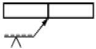
- 화살표측에 V홈 용접
- 화살표의 반대측에 V홈 용접
- 판의 양쪽에 X홈 용접
- 판의 양쪽에 V홈 용접
(정답률: 알수없음)
91. 피복 금속 아크용접기에는 발전형과 정류형이 있다. 발전형에 비교한 정류형의 특징 설명으로 틀린 것은?
- 소음이 적다.
- 취급이 쉽고 가격이 싸다.
- 보수나 점검이 간단하다.
- 옥외 현장 사용시에 편리하다.
(정답률: 알수없음)
92. 아크용접기의 정격 2차전류가 400A이고 정격사용율이 40% 이면 300A로 용접전류를 사용하여 용접할 경우 이 용접기의 허용 사용율은 약 몇 % 인가?
- 71%
- 80%
- 88%
- 91%
(정답률: 알수없음)
93. 아크용접에 비교한 가스용접의 설명으로 틀린 것은?
- 아크용접에 비해서 유해 광선의 발생이 적다.
- 아크용접에 비해서 불꽃 온도가 높다.
- 열 집중성이 나빠서 효율적인 용접이 어렵다.
- 폭발 위험성이 크고 금속이 탄화 및 산화될 가능성이 많다.
(정답률: 알수없음)
94. 한 개의 용접봉으로 살을 붙일만한 길이로 구분해서 홈을 한 부분씩 여러 층으로 쌓아올린 다음 다른 부분으로 진행하는 방법은?
- 스킵법
- 덧살 올림법
- 캐스케이드법
- 전진 블록법
(정답률: 알수없음)
95. 레이저 용접의 특징에 대한 설명으로 틀린 것은?
- 열의 영향범위가 넓어 잔류응력이 크다.
- 광선이 용접의 열원이다.
- 열의 영향범위가 좁다.
- 원격 조작이 용이하다.
(정답률: 알수없음)
96. 다음의 용접 결함 중에서 치수상 결함에 해당하는 것은?
- 스트레인 변형
- 용접부 융합불량
- 기공
- 용접부 접합불량
(정답률: 알수없음)
97. 아세틸렌가스와 접촉하면 폭발성 화합물을 생성하는 금속은?
- 강
- 주철
- 동
- 알루미늄
(정답률: 알수없음)
98. 산소창(Oxygen lance)절단을 가장 적합하게 설명한 것은?
- 수중의 기포발생을 적게하여 작업을 용이하게 하기 위하여 보통 산소 수소염을 이용한다.
- 미세한 철분이나 알루미늄 분말을 소량 배합하고 첨가제를 혼합하여 건조공기 또는 질소를 절단부에 연속적으로 공급절단하는 방법이다.
- 내경 φ3.2∼6mm, 길이 1.5∼3m 정도의 파이프를 사용하여 파이프 자체가 연소하면서 절단하는 방법이다.
- 스테인레스강의 절단을 주목적으로 한 것이며, 중탄산 소다를 주성분으로 용제 분말을 송급하여 절단하는 방법이다.
(정답률: 알수없음)
99. 용접전류가 180A, 전압이 15V, 속도가 18 cm/min 일 때, 용접길이 1cm당 용접입열(heat input)은 몇 Joule인가?
- 9000
- 150
- 48600
- 2.5
(정답률: 알수없음)
100. 용접부가 급냉되었을 때, 나타나는 현상 설명으로 틀린것은?
- 연신율 저하
- 용접부의 취화
- 내균열성 향상
- 열영향부의 경화
(정답률: 알수없음)